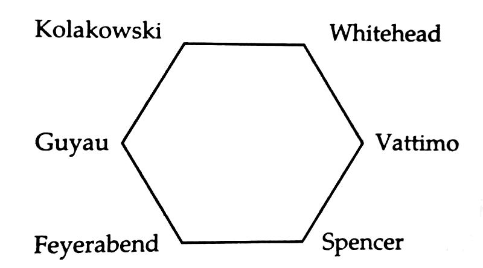
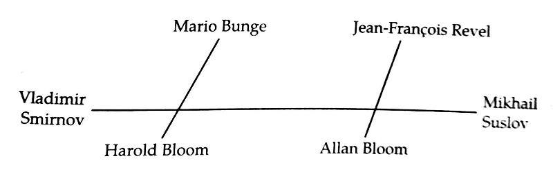

Chương 3

uôn đội mũ rộng vành và phì phèo xì gà bên mép, Ernest Mangnall mang phong cách một quý ông lịch thiệp.Ông là người tham công tiếc việc, luôn tận tụy, có trách nhiệm với việc được giao. Trong công tác huấn luyện cầu thủ, ông chú trọng nhất đến thể lực: Có thể lực, có sức bền, tất sẽ đạt được tất cả.Giống với Matt Busby và Alex Ferguson, Mangnall quan niệm HLV trưởng cần có cái uy để “trị nhân”. Ông lại đi trước thời đại ở chỗ rất chú trọng công tác “tình báo”: Thường xuyên cử người đến theo dõi, bám sát tình hình các đội đối thủ. Tuy thế, trước khi đến Manchester United, sự nghiệp huấn luyện của Mangnall không mấy thành công. Góp phần giúp Bolton…xuống hạng vào mùa 1898-1899, ông chuyển sang huấn luyện Burnley, để lại đưa đội này xuống hạng một mùa sau đó.

HLV Ernest Mangnall (Ảnh: Mangnall.co.uk)
Mangnall không thành công một phần do…không có tiền. Tại Bank Street, tiền không phải vấn đề, bởi ông chủ Davies luôn sẵn sàng mở hầu bao chiêu mộ nhân tài. Ngay mùa đầu tiên dẫn dắt United, Mangall đã tậu được tiền vệ nối danh Charlie Roberts.Xuất thân là công nhân xưởng thép, Roberts đến United từ Grimsby với giá 600 bảng. Thân hình cao to, vạm vỡ, anh có khả năng không chiến cực giỏi, công thủ toàn diện, chuyền bóng rất chuẩn, và đọc trận đấu rất tài. Từ 1905 đến 1912, Roberts mang băng thủ quân United, là ngôi sao lớn thứ hai ở Bank Street, chỉ sau Billy Meredith. Năm 1913, khi đã 30, anh được Oldham Athletic mua về với giá “khủng” 1750 bảng, tiếp tục đeo băng đội trưởng tại đây.
Cùng ra mắt với Roberts có Dick Duckworth và Harry Moger.Duckworth cùng Roberts và Alec Bell hợp thành hàng tiền vệ mạnh như thành đồng, có thể ví với bộ ba Law, Charlton, và Best sau này, còn Moger vững vàng ở vị trí thủ môn. Với chiều cao khoảng 1m94, trước khi Edwin van der Sar xuất hiện, Moger giữ kỷ lục là thủ thành cao nhất trong lịch sử United.
Dưới thời Mangnall, Manchester United nổi tiếng với lối đá thận trọng: thắng trước hết là không thua[1]. Đội hai lần liên tiếp đứng thứ ba giải Hạng Nhì, trước khi giành quyền thăng hạng vào năm 1906. Giải Hạng Nhất mùa 1906-1907 chia làm hai nửa rõ rệt: Nửa thứ nhất chứng kiến cảnh United vất vả long đong, nửa thứ hai đánh dấu việc họ vươn lên thành một thế lực thống trị.
Do đâu lại có sự khác biệt dường ấy? Trớ trêu thay, chính do Manchester City!
Những năm đầu thập niên 1990, City sở hữu lực lượng cực mạnh. Đội giành Cúp FA năm 1904, và lẽ ra đã VĐQG mùa 1904-1905, nếu không thất bại trước Aston Villa ở vòng cuối cùng. Khi City đang băng băng trên con đường chinh phục tất cả, họ bỗng liên tiếp vướng phải scandal. Đầu tiên là chuyện Alec Leake, đội trưởng Villa, lên tiếng tố cáo hữu biên của City, Billy Meredith.“Meredith hứa cho tôi 10 bảng”, Leake nói, “Nếu tôi chịu buông trận cuối, để họ có thể đăng quang”.
Sau khi tiến hành điều tra làm rõ trắng đen, FA phạt Meredith 900 bảng, đồng thời cấm anh thi đấu một năm. Phẫn nộ vì City không biện hộ giúp mình, lại cũng không giúp đỡ gì về tài chánh trong thời gian mình bị treo giò, Meredith quyết định tung hê mọi thứ. Anh lên tiếng trên báo, vạch mặt City gian lận, lén phá vỡ mức lương trần.
Lời tố của Meredith gây chấn động, như bom nổ giữa trời quang.FA ngay lập tức mở cuộc điều tra thứ hai, phát hiện ra hàng loạt sai phạm.Trong khi mức lương trần quy định chỉ vỏn vẹn 4 bảng/tuần, City trả cho nhiều cầu thủ đến 7 bảng. Kết quả là các thành viên BLĐ Man xanh bị cấm hoạt động bóng đá trong 5 năm; HLV Tom Maley bị cấm suốt đời; 17 cầu thủ bị phạt và treo giò đến tháng 1, 1907, sau khi mãn hạn thì vĩnh viễn không được khoác áo Citynữa. Trong số những người bị phạt có cả Billy Meredith. Như vậy, Meredith mang một lúc hai án treo giò.
Chẳng còn cách nào khác, City buộc phải tổ chức đấu giá, đem các cầu thủ bị phạt ra bán.Không rõ một ai đó trong nội bộ City đã tuồn tin này cho Ernest Mangnall. Thế là khi cuộc đấu giá chưa kịp diễn ra, Mangnall đã tìm đến, ký hợp đồng với bốn cầu thủ: Herbert Burgess, Jimmy Bannister, Sandy Turnbull, và Billy Meredith, cả bốn đều theo dạng chuyển nhượng tự do, không tốn một xu! Từ đó đến nay đã hơn trăm năm, đây vẫn là phi vụ chuyển nhượng hời nhất trong lịch sử United.
Đã có sẵn một số nhân tài, nhưng nếu không được bổ sung bốn cầu thủ City, việc giành ngôi VĐQG đối với Man đỏ gần như bất khả. Trong bốn cầu thủ trên, sáng giá nhất hiển nhiên là Billy Meredith, ông vua túc cầu những năm 1910, 1920. Thường được coi là người đầu tiên đạt đến đẳng cấp siêu sao bóng đá, Meredith có tốc độ nhanh như điện xẹt, trình độ kỹ thuật thượng thừa, và những đường tạt bóng như đặt vào đầu đồng đội. Cùng sinh tại xứ Wales, và cùng chơi bám cánh, Meredith hay được so sánh với Ryan Giggs; song về tính tình, anh giống nhất với Eric Cantona, tức là hết sức ngông nghênh và vô cùng kiêu hãnh[2]. Nếu như Cantona tạo nét riêng với cổ áo luôn dựng đứng, nhắc đến Meredith là nhắc đến…cây tăm, bởi anh luôn ra sân với cây tăm ngậm bên khóe miệng một cách rất khinh bạc.
Meredith là người duy nhất được tôn vinh vào hàng ngũ huyền thoại ở cả Manchester United lẫn Manchester City. Khách quan nhìn nhận, anh gắn bó với City hơn với United.Nếu không xảy ra sự cố mua độ, “phù thủy xứ Wales” đã không đặt chân đến Bank Street. Trong thời gian khoác áo City, Meredith ghi gần 150 bàn thắng, còn ở United chỉ ghi 36 bàn. Tuy thế, ngay cả khi chẳng ghi bàn nào, anh vẫn là viên ngọc quý, bởi khả năng kiến tạo vô song. Đọc tường thuật các trận đấu của United trong khoảng 1907-1911, ta thấyhầu như không trận nào, Meredith không kiến tạo ít ra là một bàn. Được Meredith truyền cảm hứng, nửa cuối mùa 1906-1907, United đá 17 trận thắng đến 11, trong khi ở nửa đầu đá 21 trận thắng có 6. Với phong độ bùng nổ ấy, đội áo đỏ được giới chuyên môn đánh giá là ứng viên nặng ký cho chức vô địch mùa sau.
Quả thật, Manchester United mùa 1907-1908 có thể ví như một chiếc xe tăng, mạnh mẽ cuốn văng và nghiền nát mọi chướng ngại. Sau trận thua 1-2 trước Middlesbrough vào đầu tháng 9, đội thắng một lèo 10 trận liên tiếp, vươn lên độc chiếm ngôi đầu bảng. Trong 10 trận này, có đến 7 trận họ ghi được từ 4 bàn trở lên, oanh liệt nhất là lần đè bẹp đương kim vô địch Newcastle 6-1. Từ đó, tuy không còn bùng nổ như trước, United giữ vững vị trí dẫn đầu, vô địch trước 5 vòng, và dù chỉ chỉ thắng 1 trong 5 trận cuối, vẫn kết thúc mùa giải với 9 điểm nhiều hơn á quân Aston Villa. Số điểm United ghi được là 52, nhiều hơn bất kỳ nhà vô địch nào trước đó[3]. Ở mùa Hạng Nhất trọn vẹn đầu tiên dưới màu áo mới, trung phong Sandy Turnbull trở thành vua phá lưới của CLB với 25 bàn thắng, 1 kỷ lục tồn tại đến tận năm 1947. Hầu hết các bàn thắng Turnbull ghi đều do Meredith dọn cỗ.
Để tưởng thưởng chiến tích VĐQG đầu tiên, chủ tịch Davies đài thọ cả đội một chuyến du lịch kiêm thi đấu giao hữu tại đế quốc Áo-Hung. Bóng đá Anh bấy giờ vẫn là bá chủ thế giới, các đội Âu lục không thể so sánh, nên United đến đâu là thắng đậm đến đấy. Sau trận United hạ Ferencvaros 7-0 tại Budapest, khán giả Hungary nổi điên, cầm đá chọi đội khách, khiến một số cầu thủ bị thương, và cảnh sát phải tuốt kiếm xông vào can thiệp. Lần đầu du đấu đã đổ máu, Ernest Mangnall thề suốt đời sẽ không thèm đặt chân đến Budapest lần thứ hai…
Đã giành ngôi VĐQG, đích ngắm kế tiếp của Manchester United là Cúp FA.Thời đó, cúp này mới là danh hiệu danh giá số một, chứ giải Hạng Nhất chỉ là thứ yếu. Sau nhiều phen thất bại, vận may cũng mỉm cười với CLB vào năm 1909. Đánh bại Brighton, Everton và Blackburn trong những vòng đầu, United gặp Burnley, đội bóng cũ của Mangnall, ở tứ kết. Phút 72, khi Burnley đang dẫn 1-0, bão tuyết bỗng đổ xuống dữ dội, khiến trọng tài phải hủy trận đấu. Tuyết rơi nhiều đến độ ông trọng tài run cầm cập, không sao thổi được còi dứt trận, phải nhờ Charlie Roberts thổi giúp! Trở về từ cõi chết, trong trận tái đấu, United thắng 3-2, sau đó thắng tiếp Newcastle, giành quyền vào chung kết với Bristol City.
Trận chung kết Cúp FA diễn ra ngày 24 tháng 4, 1909. 126 phóng viên có mặt trên sân Crystal Palace để đưa tin về sự kiện thể thao lớn nhất trong năm. Hãng tin Pathe News đem theo cả một đội ngũ quay phim, quay những diễn biến chính để phát lại trên màn ảnh rộng các rạp chiếu bóng. 71401 khán giả chứng kiến United ra sân trong bộ cánh rất thời trang, áo trắng thêu chữ V lớn màu đỏ, thiết kế bởi tiệm trang phục thể thao Billy Meredith. Bàn thắng duy nhất của trận đấu được ghi ở phút thứ 22: Nhận đường chuyền từ Meredith, Halse sút trúng xà ngang, Sandy Turnbull có mặt đúng lúc, đá bồi tung lưới Bristol[4]. Sang hiệp hai, United gặp bất lợi lớn, khi hậu vệ Vince Hayes bị chấn thương, phải đá đến hết trận với đôi chân cà nhắc. Do Hayes không chạy nhanh được nữa, HLV Mangnall phải đẩy anh lên...đứng chơi trên hàng tiền đạo, kéo Duckworth xuống hàng thủ, rồi lại kéo Halse xuống thay cho Duckworth dưới tuyến hai. Tuy vậy, đội hình chắp vá này vẫn đủ sức cầm chân Bristol, bảo toàn được tỷ số 1-0.
Hôm sau, 300000 người Manchester đứng đợi từ sớm để đón chờ những người hùng "vinh quy bái tổ". Hàng hàng lớp lớp cổ động viên chen chúc nhau, kéo dài từ nhà ga xe lửa, qua quảng trưởng trung tâm, cho đến tận Bank Street, Clayton. Khi toàn đội xuất hiện, tất cả cùng hò hét vang trời, tới tấp tung hoa vào cầu thủ. Các thành viên United cùng ngồi trên cỗ xe sáu ngựa kéo, trên hàng đầu là thủ quân Charlie Roberts cùng cúp bạc FA. Họ diễu hành một vòng trung tâm thành phố, trong bầu không chí hân hoan tưng bừng như mở hội.
Đội hình United vô địch Cúp FA năm ấy gồm các cầu thủ: Harry Moger, George Stacey, Vince Hayes, Dick Duckworth, Charlie Roberts, Alec Bell, Billy Meredith, Harold Halse, Jimmy Turnbull, Sandy Turnbull và George Wall.
Dẫu thành công trên sân cỏ, các cầu thủ Manchester United chưa vui trọn vẹn.Họ cảm thấy với tất cả công sức bỏ ra, mình chưa được tưởng thưởng một cách xứng đáng. Thật ra, không chỉ United, mà đa số cầu thủ nói chung đều thấy mình ít nhiều bị bóc lột. Bóc lột ư?Bóc lột chỗ nào? Giới chủ sẽ phản bác: Người ta phải vất vả làm việc cả ngày, không có thời gian đá banh giải trí, còn các anh chỉ việc đá banh ăn tiền, kêu ca gì nữa?Quả có thế, đời cầu thủ đúng là sướng hơn đời công nhân, nhưng những lợi nhuận khổng lồ bóng đá đem lại, cầu thủ không được hưởng bao nhiêu. Mỗi tuần, hàng chục ngàn khán giả mua vé vào SVĐ xem túc cầu, tiền vé đấy vào tay giới chủ. Giới này không chia lợi nhuận thì chớ, lại còn hè nhau lập luật, đặt ra mức lương trần 4 bảng/tuần, không cầu thủ nào được lãnh hơn số đó. Đành rằng 4 bảng cũng không phải thấp, nhưng đá bóng là nghề đặc thù, hiếm ai chơi được đến tuổi 40, nếu không tích lũy đủ thì lấy gì sống sau khi giải nghệ?Cầu thủ không phải công nhân bình thường.Họ trình diễn cho khán giả xem, tức cũng là nghệ sỹ. Vậy nên, nếu như các ca sỹ, danh cầm được trả 100 bảng cho một đêm trình diễn, việc cầu thủ đòi hỏi mức lương hơn 4 bảng cũng không có gì quá đáng. Đó là chưa nói đến việc cầu thủ là con người mà không có quyền tự do: Dù đã hết hạn hợp đồng, vẫn phải được sự đồng ý của CLB mới được chuyển đến CLB khác.
Đã sẵn bất mãn trong lòng, nên khi xảy ra vụ việc Thomas Blackstock, các cầu thủ United quyết định đứng lên đấu tranh. Blackstock là cầu thủ đội dự bị ở Bank Street, bị đột tử giữa chừng trong một trận đấu diễn ra vào tháng 4, 1907.Cái chết của Blackstock không được lưu tâm, và gia đình anh không được bồi thường một cắc nào. Bất bình trước thái độ lãnh đạm ấy, Charlie Roberts, Billy Meredith, Herbert Broomfield, Sandy Turnbull, Hertbert Burgess và Charlie Sagar đứng ra vận động thành lập công đoàn để bảo vệ quyền lợi cho cầu thủ. Họ kêu gọi cầu thủ từ nhiều CLB khác tham gia, đặt tên cho công đoàn mới thành lập là Association Football Players' Union (AFPU). Ban lãnh đạo công đoàn gồm 3 cầu thủ United, cùng 5 người khác đến từ các CLB Notts County, Tottenham, Newcastle, Sheffield United, và Bradford. Mục tiêu của AFPU là bắt giới chủ phải chăm lo hơn cho người lao động, đòi quyền tự do chuyển nhượng, và một hệ thống lương bổng hợp lý hơn. "Cầu thủ chúng ta thường quá vô tư, không lo lắng đến ngày mai", Meredith viết trên mặt báo, "Chính vì thế chúng ta bị bọn lãnh đạo CLB lợi dụng năm này qua năm khác.Nghề cầu thủ rất ngắn ngủi và bất an, thế thì tại sao chúng ta không có quyền đòi hỏi mức lương cao?"[5]
Ngay sau trận chung kết Cúp FA năm 1909 giữa United và Bristol, công đoàn quyết địnhgia nhập Tổng Công Đoàn Lao Động toàn Anh (Gerenal Federation of Trades Unions, viết tắt là GFTU). E rằng khivào GFTU, thế lực cầu thủ sẽ càng mạnh, FA ra lệnh giải tán công đoàn, buộc cầu thủ phải lựa chọn: Hoặc ngừng đấu tranh, hoặc bị treo giò. Toàn thể cầu thủ Manchester United nhất quyết không bỏ công đoàn, do đó tất cả đều bị cấm thi đấu. Theo lệnh FA, chủ tịch Davies cũng ngừng trả lương cho họ.Sôi máu, Sandy Turnbull dẫn đầu một nhóm cầu thủ tấn công vào trụ sở BLĐ, siết đi một số của cải, tài sản (trong đó có cả Cúp FA!) để trừ vào tiền nợ lương. Khi biết việc này, thủ quân Charlie Roberts liền bắt đồng đội phải đem trả đồ ngay. Roberts là vậy, luôn giữ phong thái quân tử: Đấu tranh gì thì đấu tranh, cương quyết không dùng đến những trò ăn cướp, bạo lực.
Ngày khai mạc mùa giải 1909-1910 đã gần kề, các cầu thủ United vẫn không về Bank Street mà tụ tập với nhau tại Fallowfield, tự xưng là CLB Những Kẻ Ngoài Lề. Người hâm mộ ngày ngày tìm đến động viên tinh thần họ. Ai khác mất lương giảm thu nhập không biết, chứ Billy Meredith lại giàu thêm, vì CĐV ùn ùn kéo tới tiệm quần áo của anh để mua ủng hộ.
Sợ "già néo đứt dây", FA bắn tin sẽ hủybỏ lệnh cấm, công nhận tính hợp pháp của công đoàn như cũ, với điều kiện công đoàn phải rút khỏi GFTU, không đòi tăng lương nữa, và trong tương lai không được đình công. Roberts và Meredith phẫn nộ: Có công đoàn mà không được quyền đấu tranh, vậy thì có cũng như không!Họ đứng ra tổ chức bỏ phiếu về việc liên hệ với GFTU, ngỡ rằng đa số cầu thủ sẽ bỏ phiếu thuận để tiếp tục cuộc chiến.Tuy nhiên, họ đã tính sai, vì con người đa số ai cũng dĩ hoà vi quý, chấp nhận chịu thiệt một chút hơn là phải đấu đá vất vả.Trong số những cầu thủ bỏ phiếu, 470 người bỏ phiếu chống, chỉ 172 bỏ phiếu thuận mà thôi.Tuy thất vọng, thiểu số phải phục tùng đa số.
"Tôi không thấy lớp người lao động nào mà không biết bảo vệ mình như cầu thủ bóng đá. Họ như một bầy cừu, một lũ người khốn khổ không biết cái gì là tốt cho bản thân", Roberts cay đắng, "Tôi chán ngấy cái việc đấu tranh cho bọn họ rồi, chán ngấy việc đòi hỏi quyền lợi cho cầu thủ chuyên nghiệp rồi. Không còn thời gian đâu cho những chuyện đấy nữa".Meredith thì viết: "Có người bảo với tôi: Cầu thủ bóng đá không có chí khí can trường như công nhân hầm mỏ. Lời đó thật chí lý".

CLB Những Kẻ Ngoài Lề. Hình nhỏ trong khung là Herbert Broomfield, tổng thư ký công đoàn cầu thủ. Ngồi cùng tấm biển là thủ quân Charlie Roberts. (Ảnh: 1909replayed.org)
[1] Mùa 1904-1905, United có lần đá 7 trận liền không lọt lưới bàn nào.
[2]Tuy vậy, trong khi Cantona coi khinh tiền bạc, Meredith rất chí thú làm ăn. Anh là chủ tiệm quần áo thể thao lớn nhất nhì Manchester. Có giai đoạn trang phục thi đấu của United đều do Meredith cung cấp.
[3]Mỗi trận thắng được tính 2 điểm, không phải 3 như ngày nay.
[4]Với Sandy Turnbull, đây là trận đấu để đời. Bị chấn thương chưa lành, các bác sỹ đều khuyên anh không nên ra sân, song Turnbull cương quyết nài xin HLV cho được thi đấu.
[5]Meredith rất giỏi vận động, vì anh trước kia là thợ mỏ, từng có kinh nghiệm đấu tranh, đình công đòi tăng lương.